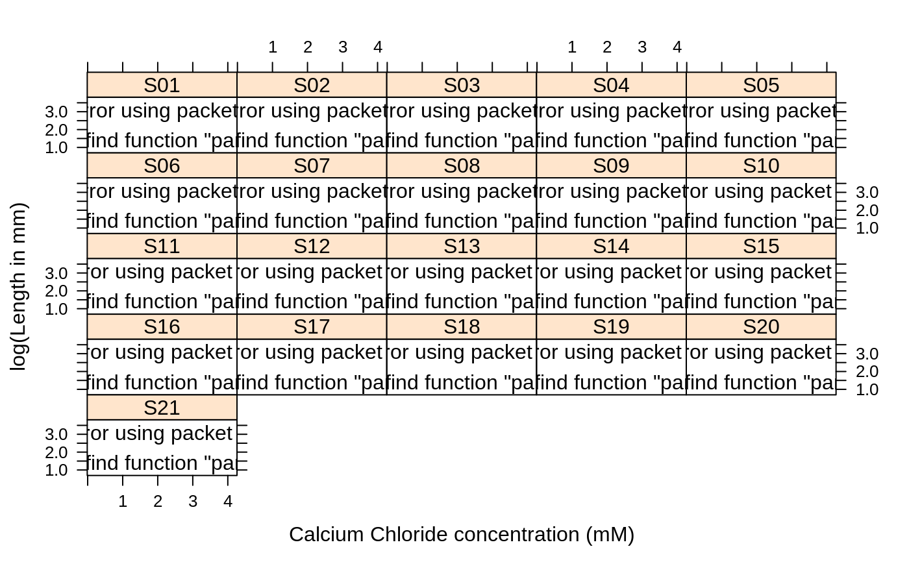

muscle.RdThe purpose of this experiment was to assess the influence of calcium in solution on the contraction of heart muscle in rats. The left auricle of 21 rat hearts was isolated and on several occasions a constant-length strip of tissue was electrically stimulated and dipped into various concentrations of calcium chloride solution, after which the shortening of the strip was accurately measured as the response.
muscle
This data frame contains the following columns:
Stripwhich heart muscle strip was used?
Concconcentration of calcium chloride solution, in multiples of 2.2 mM.
Lengththe change in length (shortening) of the strip, (allegedly) in mm.
Linder, A., Chakravarti, I. M. and Vuagnat, P. (1964) Fitting asymptotic regression curves with different asymptotes. In Contributions to Statistics. Presented to Professor P. C. Mahalanobis on the occasion of his 70th birthday, ed. C. R. Rao, pp. 221--228. Oxford: Pergamon Press.
Venables, W. N. and Ripley, B. D. (2002) Modern Applied Statistics with S. Fourth Edition. Springer.
A <- model.matrix(~ Strip - 1, data=muscle) rats.nls1 <- nls(log(Length) ~ cbind(A, rho^Conc), data = muscle, start = c(rho=0.1), algorithm="plinear") (B <- coef(rats.nls1))#> rho .lin.StripS01 .lin.StripS02 .lin.StripS03 .lin.StripS04 #> 0.07776401 3.08304824 3.30137838 3.44562531 2.80464434 #> .lin.StripS05 .lin.StripS06 .lin.StripS07 .lin.StripS08 .lin.StripS09 #> 2.60835015 3.03357725 3.52301734 3.38711844 3.46709396 #> .lin.StripS10 .lin.StripS11 .lin.StripS12 .lin.StripS13 .lin.StripS14 #> 3.81438456 3.73878664 3.51332581 3.39741115 3.47088608 #> .lin.StripS15 .lin.StripS16 .lin.StripS17 .lin.StripS18 .lin.StripS19 #> 3.72895847 3.31863862 3.37938673 2.96452195 3.58468686 #> .lin.StripS20 .lin.StripS21 .lin22 #> 3.39628029 3.36998872 -2.96015460st <- list(alpha = B[2:22], beta = B[23], rho = B[1]) (rats.nls2 <- nls(log(Length) ~ alpha[Strip] + beta*rho^Conc, data = muscle, start = st))#> Nonlinear regression model #> model: log(Length) ~ alpha[Strip] + beta * rho^Conc #> data: muscle #> alpha..lin.StripS01 alpha..lin.StripS02 alpha..lin.StripS03 alpha..lin.StripS04 #> 3.08305 3.30138 3.44563 2.80464 #> alpha..lin.StripS05 alpha..lin.StripS06 alpha..lin.StripS07 alpha..lin.StripS08 #> 2.60835 3.03358 3.52302 3.38712 #> alpha..lin.StripS09 alpha..lin.StripS10 alpha..lin.StripS11 alpha..lin.StripS12 #> 3.46709 3.81438 3.73879 3.51333 #> alpha..lin.StripS13 alpha..lin.StripS14 alpha..lin.StripS15 alpha..lin.StripS16 #> 3.39741 3.47089 3.72896 3.31864 #> alpha..lin.StripS17 alpha..lin.StripS18 alpha..lin.StripS19 alpha..lin.StripS20 #> 3.37939 2.96452 3.58469 3.39628 #> alpha..lin.StripS21 beta..lin22 rho.rho #> 3.36999 -2.96015 0.07776 #> residual sum-of-squares: 1.045 #> #> Number of iterations to convergence: 0 #> Achieved convergence tolerance: 4.923e-06Muscle <- with(muscle, { Muscle <- expand.grid(Conc = sort(unique(Conc)), Strip = levels(Strip)) Muscle$Yhat <- predict(rats.nls2, Muscle) Muscle <- cbind(Muscle, logLength = rep(as.numeric(NA), 126)) ind <- match(paste(Strip, Conc), paste(Muscle$Strip, Muscle$Conc)) Muscle$logLength[ind] <- log(Length) Muscle}) lattice::xyplot(Yhat ~ Conc | Strip, Muscle, as.table = TRUE, ylim = range(c(Muscle$Yhat, Muscle$logLength), na.rm = TRUE), subscripts = TRUE, xlab = "Calcium Chloride concentration (mM)", ylab = "log(Length in mm)", panel = function(x, y, subscripts, ...) { panel.xyplot(x, Muscle$logLength[subscripts], ...) llines(spline(x, y)) })